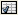

Advanced Trait Editors¶
The editor factories described in the following sections are more advanced than those in the previous section. In some cases, they require writing additional code; in others, the editors they generate are intended for use in complex user interfaces, in conjunction with other editors.
CustomEditor()¶
| Suitable for: | Special cases |
|---|---|
| Default for: | (none) |
| Required parameters: | |
| factory | |
| Optional parameters: | |
| args | |
Use CustomEditor() to create an “editor” that is a non-Traits-based custom control. The factory parameter must be a function that generates the custom control. The function must have the following signature:
factory_function(window_parent, editor*[, **args, **kwargs])
- window_parent: The parent window for the control
- editor: The editor object created by CustomEditor()
Additional arguments, if any, can be passed as a tuple in the args parameter of CustomEditor().
For an example of using CustomEditor(),examine the implementation of the NumericModelExplorer class in the enthought.model.numeric_model_explorer module; CustomEditor() is used to generate the plots in the user interface.
DropEditor()¶
| Suitable for: | Instance traits |
|---|---|
| Default for: | (none) |
| Optional parameters: | |
| binding, klass, readonly | |
DropEditor() generates an editor that is a text field containing a string representation of the trait attribute’s value. The user can change the value assigned to the attribute by dragging and dropping an object on the text field, for example, a node from a tree editor (See TreeEditor()). If the readonly parameter is True (the default), the user cannot modify the value by typing in the text field.
You can restrict the class of objects that can be dropped on the editor by specifying the klass parameter.
You can specify that the dropped object must be a binding (enthought.naming.api.Binding) by setting the binding parameter to True. If so, the bound object is retrieved and checked to see if it can be assigned to the trait attribute.
If the dropped object (or the bound object associated with it) has a method named drop_editor_value(), it is called to obtain the value to assign to the trait attribute. Similarly, if the object has a method named drop_editor_update(), it is called to update the value displayed in the text editor. This method requires one parameter, which is the GUI control for the text editor.
DNDEditor()¶
| Suitable for: | Instance traits |
|---|---|
| Default for: | (none) |
| Optional parameters: | |
| drag_target, drop_target, image | |
DNDEditor() generates an editor that represents a file or a HasTraits instance as an image that supports dragging and dropping. Depending on the editor style, the editor can be a drag source (the user can set the value of the trait attribute by dragging a file or object onto the editor, for example, from a tree editor), or drop target (the user can drag from the editor onto another target).
Table 9: Drag-and-drop editor style variations
| Editor Style | Drag Source? | Drop Target? |
|---|---|---|
| Simple | Yes | Yes |
| Custom | No | Yes |
| Read-only | Yes | No |
KeyBindingEditor()¶
The KeyBindingEditor() factory differs from other trait editor factories because it generates an editor, not for a single attribute, but for an object of a particular class, enthought.traits.ui.key_bindings.KeyBindings. A KeyBindings object is a list of bindings between key codes and handler methods. You can specify a KeyBindings object as an attribute of a View. When the user presses a key while a View has input focus, the user interface searches the View for a KeyBindings that contains a binding that corresponds to the key press; if such a binding does not exist on the View, it searches enclosing Views in order, and uses the first matching binding, if any. If it does not find any matching bindings, it ignores the key press.
A key binding editor is a separate dialog box that displays the string representation of each key code and a description of the corresponding method. The user can click a text box, and then press a key or key combination to associate that key press with a method.
Figure 50: Key binding editor dialog box
The following code example creates a user interface containing a code editor with associated key bindings, and a button that invokes the key binding editor.
Example 17: Code editor with key binding editor
# key_bindings.py -- Example of a code editor with a
# key bindings editor
from enthought.traits.api \
import Button, Code, HasPrivateTraits, Str
from enthought.traits.ui.api \
import View, Item, Group, Handler, CodeEditor
from enthought.traits.ui.key_bindings \
import KeyBinding, KeyBindings
key_bindings = KeyBindings(
KeyBinding( binding1 = 'Ctrl-s',
description = 'Save to a file',
method_name = 'save_file' ),
KeyBinding( binding1 = 'Ctrl-r',
description = 'Run script',
method_name = 'run_script' ),
KeyBinding( binding1 = 'Ctrl-k',
description = 'Edit key bindings',
method_name = 'edit_bindings' )
)
# Traits UI Handler class for bound methods
class CodeHandler ( Handler ):
def save_file ( self, info ):
info.object.status = "save file"
def run_script ( self, info ):
info.object.status = "run script"
def edit_bindings ( self, info ):
info.object.status = "edit bindings"
key_bindings.edit_traits()
class KBCodeExample ( HasPrivateTraits ):
code = Code
status = Str
kb = Button(label='Edit Key Bindings')
view = View( Group (
Item( 'code',
style = 'custom',
resizable = True ),
Item('status', style='readonly'),
'kb',
orientation = 'vertical',
show_labels = False,
),
id = 'KBCodeExample',
key_bindings = key_bindings,
title = 'Code Editor With Key Bindings',
resizable = True,
handler = CodeHandler() )
def _kb_fired( self, event ):
key_bindings.edit_traits()
if __name__ == '__main__':
KBCodeExample().configure_traits()
TableEditor()¶
| Suitable for: | List(InstanceType) |
|---|---|
| Default for: | (none) |
| Required parameters: | |
| columns or columns_name | |
| Optional parameters: | |
| See Traits API Reference, enthought.traits.ui.wx.table_editor.ToolkitEditorFactory attributes. | |
TableEditor() generates an editor that displays instances in a list as rows in a table, with attributes of the instances as values in columns. You must specify the columns in the table. Optionally, you can provide filters for filtering the set of displayed items, and you can specify a wide variety of options for interacting with and formatting the table.

Figure 51: Table editor
To see the code that results in Figure 51, refer to TableEditor_demo.py in the demos/Traits UI Demo/Standard Editors subdirectory of the Traits UI package. This example demonstrates object columns, expression columns, filters, searching, and adding and deleting rows.
The parameters for TableEditor() can be grouped in several broad categories, described in the following sections.
- Specifying Columns
- Managing Items
- Editing the Table
- Defining the Layout
- Defining the Format
- Other User Interactions
Specifying Columns¶
You must provide the TableEditor() factory with a list of columns for the table. You can specify this list directly, as the value of the columns parameter, or indirectly, in an extended context attribute referenced by the columns_name parameter.
The items in the list must be instances of enthought.traits.ui.api.TableColumn, or of a subclass of TableColumn. Some subclasses of TableColumn that are provided by the Traits UI package include ObjectColumn, ListColumn, NumericColumn, and ExpressionColumn. (See the Traits API Reference for details about these classes.) In practice, most columns are derived from one of these subclasses, rather than from TableColumn. For the usual case of editing trait attributes on objects in the list, use ObjectColumn. You must specify the name parameter to the ObjectColumn() constructor, referencing the name of the trait attribute to be edited.
You can specify additional columns that are not initially displayed using the other_columns parameter. If the configurable parameter is True (the default), a Set user preferences for table icon () appears on the table’s toolbar. When the user clicks this icon, a dialog box opens that enables the user to select and order the columns displayed in the table, as shown in Figure 52. (The dialog box is implemented using a set editor; see SetEditor().) Any columns that were specified in the other_columns parameter are listed in the left list box of this dialog box, and can be displayed by moving them into the right list box.

Figure 52: Column selection dialog box for a table editor
Managing Items¶
Table editors support several mechanisms to help users locate items of interest.
Organizing Items¶
Table editors provide two mechanisms for the user to organize the contents of a table: sorting and reordering. The user can sort the items based on the values in a column, or the user can manually order the items. Usually, only one of these mechanisms is used in any particular table, although the Traits UI package does not enforce a separation. If the user has manually ordered the items, sorting them would throw away that effort.
If the reorderable parameter is True, Move up ( ) and
Move down () icons appear in the table toolbar. Clicking one of
these icons changes the position of the selected item.
) and
Move down () icons appear in the table toolbar. Clicking one of
these icons changes the position of the selected item.
If the sortable parameter is True (the default), then the user can sort the items in the table based on the values in a column by Control-clicking the header of that column.
- On the first click, the items are sorted in ascending order. The characters >> appear in the column header to indicate that the table is sorted ascending on this column’s values.
- On the second click, the items are sorted descending order. The characters << appear in the column header to indicate that the table is sorted descending on this column’s values.
- On the third click, the items are restored to their original order, and the column header is undecorated.
If the sort_model parameter is true, the items in the list being edited are sorted when the table is sorted. The default value is False, in which case, the list order is not affected by sorting the table.
If sortable is True and sort_model is False, then a Do not sort columns icon () appears in the table toolbar. Clicking this icon restores the original sort order.
If the reverse parameter is True, then the items in the underlying list are maintained in the reverse order of the items in the table (regardless of whether the table is sortable or reorderable).
Filtering and Searching¶
You can provide an option for the user to apply a filter to a table, so that only items that pass the filter are displayed. This feature can be very useful when dealing with lengthy lists. You can specify a filter to apply to the table either directly, or via another trait. Table filters must be instances of enthought.traits.ui.api.TableFilter, or of a subclass of TableFilter. Some subclasses of TableFilter that are provided by the Traits UI package include EvalTableFilter, RuleTableFilter, and MenuTableFilter. (See the Traits API Reference for details about these classes.) The Traits UI package also provides instances of these filter classes as “templates”, which cannot be edited or deleted, but which can be used as models for creating new filters.
The filter parameter specifies a filter that is applied to the table when it is first displayed. The filter_name parameter specifies an extended trait name for a trait that is either a table filter object or a callable that accepts an object and returns True if the object passes the filter criteria, or false if it does not. You can use filter_name to embed a view of a table filter in the same view as its table.
You can specify use the filters parameter to specify a list of table filters that are available to apply to a table. When filters is specified, a drop-down list box appears in the table toolbar, containing the filters that are available for the user to apply. When the user selects a filter, it is automatically applied to the table. A status message to the right of the filters list indicates what subset of the items in the table is currently displayed. A special item in the filter list, named Customize, is always provided; clicking this item opens a dialog box that enables the user to create new filters, or to edit or delete existing filters (except templates).
You can also provide an option for the user to use filters to search the table.
If you set the search parameter to an instance of TableFilter (or of a
subclass), a Search table icon ( ) appears on the
table toolbar. Clicking this icon opens a Search for dialog box,
which enables the user to specify filter criteria, to browse through matching
items, or select all matching items.
) appears on the
table toolbar. Clicking this icon opens a Search for dialog box,
which enables the user to specify filter criteria, to browse through matching
items, or select all matching items.
Interacting with Items¶
As the user clicks in the table, you may wish to enable certain program behavior.
The value of the selection_mode parameter specifies how the user can make selections in the grid:
- cell: A single cell at a time
- cells: Multiple cells
- column: A single column at a time
- columns: Multiple columns
- row: A single row at a time
- rows: Multiple rows
You can use the selected parameter to specify the name of a trait attribute in the current context to synchronize with the user’s current selection. For example, you can enable or disable menu items or toolbar icons depending on which item is selected. The synchronization is two-way; you can set the attribute referenced by selected to force the table to select a particular item.
You can use the selected_indices parameter to specify the name of a trait attribute in the current context to synchronize with the indices of the table editor selection. The content of the selection depends on the selection_mode value:
- cell: The selection is a tuple of the form (object, column_name),
where object is the object contains the selected cell, and column_name is the name of the column the cell is in. If there is no selection, the tuple is (None, ‘’).
cells: The selection is a list of tuples of the form (object, column_name), with one tuple for each selected cell, in order from top to bottom and left to right. If there is no selection, the list is empty.
column: The selection is the name of the selected column, or the empty string if there is no selection.
columns: The selection is a list containing the names of the selected columns, in order from left to right. If there is no selection, the list is empty.
row: The selection is either the selected object or None if nothing is selected in the table.
rows: The selection is a list of the selected objects, in ascending row order. If there is no selection, the list is empty.
The on_select and on_dclick parameters are callables to invoke when the user selects or double-clicks an item, respectively.
You can define a shortcut menu that opens when the user right-clicks an item. Use the menu parameter to specify a Traits UI or PyFace Menu, containing Action objects for the menu commands.
Editing the Table¶
The Boolean editable parameter controls whether the table or its items can be modified in any way. This parameter defaults to True, except when the style is ‘readonly’. Even when the table as a whole is editable, you can control whether individual columns are editable through the editable attribute of TableColumn.
Adding Items¶
To enable users to add items to the table, specify as the row_factory parameter a callable that generates an object that can be added to the list in the table; for example, the class of the objects in the table. When row_factory is specified, an Insert new item icon () appears in the table toolbar, which generates a new row in the table. Optionally, you can use row_factory_args and row_factory_kw to specify positional and keyword arguments to the row factory callable.
To save users the trouble of mousing to the toolbar, you can enable them to add an item by selecting the last row in the table. To do this, set auto_add to True. In this case, the last row is blank until the user sets values. Pressing Enter creates the new item and generates a new, blank last row.
Deleting Items¶
The deletable parameter controls whether items can be deleted from the table.
This parameter can be a Boolean (defaulting to False) or a callable; the
callable must take an item as an argument and handle deleting it. If deletable
is not False, a Delete current item icon ( ) appears on the table
toolbar; clicking it deletes the item corresponding to the row that is selected
in the table.
) appears on the table
toolbar; clicking it deletes the item corresponding to the row that is selected
in the table.
Modifying Items¶
The user can modify items in two ways.
- For columns that are editable, the user can change an item’s value directly in the table. The editor used for each attribute in the table is the simple style of editor for the corresponding trait.
- Alternatively, you can specify a View for editing instances, using the edit_view parameter. The resulting user interface appears in a subpanel to the right or below the table (depending on the orientation parameter). You can specify a handler to use with the view, using edit_view_handler. You can also specify the subpanel’s height and width, with edit_view_height and edit_view_width.
Defining the Layout¶
Some of the parameters for the TableEditor() factory affect global aspects of the display of the table.
- auto_size: If True, the cells of the table automatically adjust to the optimal size based on their contents.
- orientation: The layout of the table relative to its associated editor pane. Can be ‘horizontal’ or ‘vertical’.
- rows: The number of visible rows in the table.
- show_column_labels: If True (the default), displays labels for the columns. You can specify the labels to use in the column definitions; otherwise, a “user friendly” version of the trait attribute name is used.
- show_toolbar: If False, the table toolbar is not displayed, regardless of whether other settings would normally create a toolbar. The default is True.
Defining the Format¶
The TableEditor() factory supports a variety of parameters to control the visual formatting of the table, such as colors, fonts, and sizes for lines, cells, and labels. For details, refer to the Traits API Reference, enthought.traits.ui.wx.table_editor.ToolkitEditorFactory attributes.
You can also specify formatting options for individual table columns when you define them.
Other User Interactions¶
The table editor supports additional types of user interaction besides those controlled by the factory parameters.
- Column dragging: The user can reorganize the column layout of a table editor by clicking and dragging a column label to its new location. If you have enabled user preferences for the view and table editor (by specifying view and item IDs), the new column layout is persisted across user sessions.
- Column resizing: The user can resize a column by dragging the column separator (in one of the data rows) to a new position. Because of the column-dragging support, clicking the column separator in the column label row does not work.
- Data dragging: The user can drag the contents of any cell by clicking and dragging.
TabularEditor()¶
| Suitable for: | lists, arrays, and other large sequences of objects |
|---|---|
| Default for: | (none) |
| Required parameters: | |
| adapter | |
| Optional parameters: | |
| activated, clicked, column_clicked, dclicked, drag_move, editable, horizontal_lines, images, multi_select, operations, right_clicked, right_dclicked, selected, selected_row, show_titles, vertical_lines | |
The TabularEditor() factory can be used for many of the same purposes as the TableEditor() factory, that is, for displaying a table of attributes of lists or arrays of objects. While similar in function, the tabular editor has advantages and disadvantages relative to the table editor.
Advantages¶
- Very fast: The tabular editor uses a virtual model, which accesses data from the underlying model only as needed. For example, if you have a million-element array, but can display only 50 rows at a time, the editor requests only 50 elements of data at a time.
- Very flexible data model: The editor uses an adapter model to interface with the underlying data. This strategy allows it to easily deal with many types of data representation, from list of objects, to arrays of numbers, to tuples of tuples, and many other formats.
- Supports useful data operations, including:
- Moving the selection up and down using the keyboard arrow keys.
- Moving rows up and down using the keyboard.
- Inserting and deleting items using the keyboard.
- Initiating editing of items using the keyboard.
- Dragging and dropping of table items to and from the editor, including support for both copy and move operations for single and multiple items.
- Visually appealing: The tabular editor, in general, uses the underlying operating system’s native table or grid control, and as a result often looks better than the control used by the table editor.
- Supports displaying text and images in any cell. However, the images displayed must be all the same size for optimal results.
Disadvantages¶
- Not as full-featured: The table editor includes support for arbitrary data filters, searches, and different types of sorting. These differences may narrow as features are added to the tabular editor.
- Limited data editing capabilities: The tabular editor supports editing only textual values, whereas the table editor supports a wide variety of column editors, and can be extended with more as needed. This is due to limitations of the underlying native control used by the tabular editor.
TabularAdapter¶
The tabular editor works in conjunction with an adapter class, derived from TabularAdapter. The tabular adapter interfaces between the tabular editor and the data being displayed. The tabular adapter is the reason for the flexibility and power of the tabular editor to display a wide variety of data.
The most important attribute of TabularAdapter is columns, which is list of columns to be displayed. Each entry in the columns list can be either a string, or a tuple consisting of a string and another value, which can be of any type. The string is used as the label for the column. The second value in the tuple, called the* column ID*, identifies the column to the adapter. It is typically a trait attribute name or an integer index, but it can be any value appropriate to the adapter. If only a string is specified for an entry, then the index of the entry within the columns list is used as that entry’s column ID.
Attributes on TabularAdapter control the appearance of items, and aspects of interaction with items, such as whether they can be edited, and how they respond to dragging and dropping. Setting any of these attributes on the adapter subclass sets the global behavior for the editor. Refer to the Traits API Reference for details of the available attributes.
You can also specify these attributes for a specific class or column ID, or combination of class and column ID. When the TabularAdapter needs to look up the value of one of its attributes for a specific item in the table, it looks for attributes with the following naming conventions in the following order:
- classname_columnid_attribute
- classname_attribute
- columnid_attribute
- attribute
For example, to find the text_color value for an item whose class is Person and whose column ID is ‘age’, the get_text_color() method looks for the following attributes in sequence, and returns the first value it finds:
- Person_age_text_color
- Person_text_color
- age_text_color
- text_color
Note that the classname can be the name of a base class, searched in the method resolution order (MRO) for the item’s class. So for example, if the item were a direct instance of Employee, which is a subclass of Person, then the Person_age_text_color attribute would apply to that item (as long as there were no Employee_age_text_color attribute).
The Tabular Editor User Interface¶
Figure 53 shows an example of a tabular editor on Microsoft Windows, displaying information about source files in the Traits package. This example includes a column that contains an image for files that meet certain conditions.

Figure 53: Tabular editor on MS Windows
Depending on how the tabular editor is configured, certain keyboard interactions may be available. For some interactions, you must specify that the corresponding operation is allowed by including the operation name in the operations list parameter of TabularEditor().
Up arrow: Selects the row above the currently selected row.
Down arrow: Selects the row below the currently selected row.
Page down: Appends a new item to the end of the list (‘append’ operation).
Left arrow: Moves the currently selected row up one line (‘move’ operation).
Right arrow: Moves the currently selected row down one line (‘move’ operation).
Backspace, Delete: Deletes from the list all items in the current selection (‘delete’ operation).
Enter, Escape: Initiates editing on the current selection (‘edit’ operation).
- Insert:: Inserts a new item before the current selection (‘insert’
operation).
The ‘append’, ‘move’, ‘edit’, and ‘insert’ operations can occur only when a single item is selected. The ‘delete’ operation works for one or more items selected.
Depending on how the editor and adapter are specified, drag and drop operations may be available. If the user selects multiple items and drags one of them, all selected items are included in the drag operation. If the user drags a non-selected item, only that item is dragged.
The editor supports both “drag-move” and “drag-copy” semantics. A drag-move operation means that the dragged items are sent to the target and are removed from the list displayed in the editor. A drag-copy operation means that the dragged items are sent to the target, but are not deleted from the list data.
TreeEditor()¶
| Suitable for: | Instance |
|---|---|
| Default for: | (none) |
| Required parameters: | |
| nodes (required except for shared editors; see Editing Objects) | |
| Optional parameters: | |
| auto_open, editable, editor, hide_root, icon_size, lines_mode, on_dclick, on_select, orientation, selected, shared_editor, show_icons | |
TreeEditor() generates a hierarchical tree control, consisting of nodes. It is useful for cases where objects contain lists of other objects.
The tree control is displayed in one pane of the editor, and a user interface for the selected object is displayed in the other pane. The layout orientation of the tree and the object editor is determined by the orientation parameter of TreeEditor(), which can be ‘horizontal’ or ‘vertical’.
You must specify the types of nodes that can appear in the tree using the nodes parameter, which must be a list of instances of TreeNode (or of subclasses of TreeNode).

Figure 54: Tree editor
The following example shows the code that produces the editor shown in Figure 54.
Example 18: Code for example tree editor
# tree_editor.py -- Example of a tree editor
from enthought.traits.api \
import HasTraits, Str, Regex, List, Instance
from enthought.traits.ui.api \
import TreeEditor, TreeNode, View, Item, VSplit, \
HGroup, Handler, Group
from enthought.traits.ui.menu \
import Menu, Action, Separator
from enthought.traits.ui.wx.tree_editor \
import NewAction, CopyAction, CutAction, \
PasteAction, DeleteAction, RenameAction
# DATA CLASSES
class Employee ( HasTraits ):
name = Str( '<unknown>' )
title = Str
phone = Regex( regex = r'\d\d\d-\d\d\d\d' )
def default_title ( self ):
self.title = 'Senior Engineer'
class Department ( HasTraits ):
name = Str( '<unknown>' )
employees = List( Employee )
class Company ( HasTraits ):
name = Str( '<unknown>' )
departments = List( Department )
employees = List( Employee )
class Owner ( HasTraits ):
name = Str( '<unknown>' )
company = Instance( Company )
# INSTANCES
jason = Employee(
name = 'Jason',
title = 'Engineer',
phone = '536-1057' )
mike = Employee(
name = 'Mike',
title = 'Sr. Marketing Analyst',
phone = '536-1057' )
dave = Employee(
name = 'Dave',
title = 'Sr. Engineer',
phone = '536-1057' )
susan = Employee(
name = 'Susan',
title = 'Engineer',
phone = '536-1057' )
betty = Employee(
name = 'Betty',
title = 'Marketing Analyst' )
owner = Owner(
name = 'wile',
company = Company(
name = 'Acme Labs, Inc.',
departments = [
Department(
name = 'Marketing',
employees = [ mike, betty ]
),
Department(
name = 'Engineering',
employees = [ dave, susan, jason ]
)
],
employees = [ dave, susan, mike, betty, jason ]
)
)
# View for objects that aren't edited
no_view = View()
# Actions used by tree editor context menu
def_title_action = Action(name='Default title',
action = 'object.default')
dept_action = Action(
name='Department',
action='handler.employee_department(editor,object)')
# View used by tree editor
employee_view = View(
VSplit(
HGroup( '3', 'name' ),
HGroup( '9', 'title' ),
HGroup( 'phone' ),
id = 'vsplit' ),
id = 'enthought.traits.doc.example.treeeditor',
dock = 'vertical' )
class TreeHandler ( Handler ):
def employee_department ( self, editor, object ):
dept = editor.get_parent( object )
print '%s works in the %s department.' %\
( object.name, dept.name )
# Tree editor
tree_editor = TreeEditor(
nodes = [
TreeNode( node_for = [ Company ],
auto_open = True,
children = '',
label = 'name',
view = View( Group('name',
orientation='vertical',
show_left=True )) ),
TreeNode( node_for = [ Company ],
auto_open = True,
children = 'departments',
label = '=Departments',
view = no_view,
add = [ Department ] ),
TreeNode( node_for = [ Company ],
auto_open = True,
children = 'employees',
label = '=Employees',
view = no_view,
add = [ Employee ] ),
TreeNode( node_for = [ Department ],
auto_open = True,
children = 'employees',
label = 'name',
menu = Menu( NewAction,
Separator(),
DeleteAction,
Separator(),
RenameAction,
Separator(),
CopyAction,
CutAction,
PasteAction ),
view = View( Group ('name',
orientation='vertical',
show_left=True )),
add = [ Employee ] ),
TreeNode( node_for = [ Employee ],
auto_open = True,
label = 'name',
menu=Menu( NewAction,
Separator(),
def_title_action,
dept_action,
Separator(),
CopyAction,
CutAction,
PasteAction,
Separator(),
DeleteAction,
Separator(),
RenameAction ),
view = employee_view )
]
)
# The main view
view = View(
Group(
Item(
name = 'company',
id = 'company',
editor = tree_editor,
resizable = True ),
orientation = 'vertical',
show_labels = True,
show_left = True, ),
title = 'Company Structure',
id = \
'enthought.traits.ui.tests.tree_editor_test',
dock = 'horizontal',
drop_class = HasTraits,
handler = TreeHandler(),
buttons = [ 'Undo', 'OK', 'Cancel' ],
resizable = True,
width = .3,
height = .3 )
if __name__ == '__main__':
owner.configure_traits( view = view )
Defining Nodes¶
For details on the attributes of the TreeNode class, refer to the Traits API Reference.
You must specify the classes whose instances the node type applies to. Use the node_for attribute of TreeNode to specify a list of classes; often, this list contains only one class. You can have more than one node type that applies to a particular class; in this case, each object of that class is represented by multiple nodes, one for each applicable node type. In Figure 54, one Company object is represented by the nodes labeled “Acme Labs, Inc.”, “Departments”, and “Employees”.
A Node Type without Children¶
To define a node type without children, set the children attribute of TreeNode to the empty string. In Example 16, the following lines define the node type for the node that displays the company name, with no children:
TreeNode( node_for = [ Company ],
auto_open = True,
children = '',
label = 'name',
view = View( Group('name',
orientation='vertical',
show_left=True )) ),
A Node Type with Children¶
To define a node type that has children, set the children attribute of TreeNode to the (extended) name of a trait on the object that it is a node for; the named trait contains a list of the node’s children. In Example 16, the following lines define the node type for the node that contains the departments of a company. The node type is for instances of Company, and ‘departments’ is a trait attribute of Company.
TreeNode( node_for = [ Company ],
auto_open = True,
children = 'departments',
label = '=Departments',
view = no_view,
add = [ Department ] ),
Setting the Label of a Tree Node¶
The label attribute of Tree Node can work in either of two ways: as a trait attribute name, or as a literal string.
If the value is a simple string, it is interpreted as the extended trait name of an attribute on the object that the node is for, whose value is used as the label. This approach is used in the code snippet in A Node Type without Children.
If the value is a string that begins with an equals sign (‘=’), the rest of the string is used as the literal label. This approach is used in the code snippet in A Node Type with Children.
You can also specify a callable to format the label of the node, using the formatter attribute of TreeNode.
Defining Operations on Nodes¶
You can use various attributes of TreeNode to define operations or behavior of nodes.
Allowing the Hierarchy to Be Modified¶
If a node contains children, you can allow objects to be added to its set of children, through operations such as dragging and dropping, copying and pasting, or creating new objects. Two attributes control these operations: add and move. Both are lists of classes. The add attribute contains classes that can be added by any means, including creation. The code snippet in the preceding section (8.2.7.2.1) includes an example of the add attribute. The move attribute contains classes that can be dragged and dropped, but not created. The move attribute need not be specified if all classes that can be moved can also be created (and therefore are specified in the add value).
Note
The add attribute alone is not enough to create objects.
Specifying the add attribute makes it possible for objects of the specified classes to be created, but by itself, it does not provide a way for the user to do so. In the code snippet in the preceding section (Shortcut Menus on Nodes), ‘NewAction’ in the Menu constructor call defines a New > Employee menu item that creates Employee objects.
In the example tree editor, users can create new employees using the New > Employee shortcut menu item, and they can drag an employee node and drop it on a department node. The corresponding object becomes a member of the appropriate list.
You can specify the label that appears on the New submenu when adding a particular type of object, using the name attribute of TreeNode. Note that you set this attribute on the tree node type that will be added by the menu item, not the node type that contains the menu item. For example, to change New > Employee to New > Worker, set name = 'Worker' on the tree node whose node_for value contains Employee. If this attribute is not set, the class name is used.
You can determine whether a node or its children can be copied, renamed, or deleted, by setting the following attributes on TreeNode:
| Attribute | If True, the ... | can be... |
|---|---|---|
| copy | object’s children | copied. |
| delete | object’s children | deleted. |
| delete_me | object | deleted. |
| rename | object’s children | renamed. |
| rename_me | object | renamed. |
All of these attributes default to True. As with add, you must also define actions to perform these operations.
Behavior on Nodes¶
As the user clicks in the tree, you may wish to enable certain program behavior.
You can use the selected parameter to specify the name of a trait attribute on the current context object to synchronize with the user’s current selection. For example, you can enable or disable menu items or toolbar icons depending on which node is selected. The synchronization is two-way; you can set the attribute referenced by selected to force the tree to select a particular node.
The on_select and on_dclick parameters are callables to invoke when the user selects or double-clicks a node, respectively.
Expanding and Collapsing Nodes¶
You can control some aspects of expanding and collapsing of nodes in the tree.
The integer auto_open parameter of TreeEditor() determines how many levels are expanded below the root node, when the tree is first displayed. For example, if auto_open is 2, then two levels below the root node are displayed (whether or not the root node itself is displayed, which is determined by hide_root).
The Boolean auto_open attribute of TreeNode determines whether nodes of that type are expanded when they are displayed (at any time, not just on initial display of the tree). For example, suppose that a tree editor has auto_open setting of 2, and contains a tree node at level 3 whose auto_open attribute is True. The nodes at level 3 are not displayed initially, but when the user expands a level 2 node, displaying the level 3 node, that’s nodes children are automatically displayed also. Similarly, the number of levels of nodes initially displayed can be greater than specified by the tree editor’s auto_open setting, if some of the nodes have auto_open set to True.
If the auto_close attribute of TreeNode is set to True, then when a node is expanded, any siblings of that node are automatically closed. In other words, only one node of this type can be expanded at a time.
Editing Objects¶
One pane of the tree editor displays a user interface for editing the object that is selected in the tree. You can specify a View to use for each node type using the view attribute of TreeNode. If you do not specify a view, then the default view for the object is displayed. To suppress the editor pane, set the editable parameter of TreeEditor() to False; in this case, the objects represented by the nodes can still be modified by other means, such as shortcut menu commands.
You can define multiple tree editors that share a single editor pane. Each tree editor has its own tree pane. Each time the user selects a different node in any of the sharing tree controls, the editor pane updates to display the user interface for the selected object. To establish this relationship, do the following:
Call TreeEditor() with the shared_editor parameter set to True, without defining any tree nodes. The object this call returns defines the shared editor pane. For example:
my_shared_editor_pane = TreeEditor(shared_editor=True)
For each editor that uses the shared editor pane:
- Set the shared_editor parameter of TreeEditor() to True.
- Set the editor parameter of TreeEditor() to the object returned in Step 1.
For example:
shared_tree_1 = TreeEditor(shared_editor = True, editor = my_shared_editor_pane, nodes = [ TreeNode( # ... ) ] ) shared_tree_2 = TreeEditor(shared_editor = True, editor = my_shared_editor_pane, nodes = [ TreeNode( # ... ) ] )
Defining the Format¶
Several parameters to TreeEditor() affect the formatting of the tree control:
- show_icons: If True (the default), icons are displayed for the nodes in the tree.
- icon_size: A two-integer tuple indicating the size of the icons for the nodes.
- lines_mode: Determines whether lines are displayed between related nodes. The valid values are ‘on’, ‘off’, and ‘appearance’ (the default). When set to ‘appearance’, lines are displayed except on Posix-based platforms.
- hide_root: If True, the root node in the hierarchy is not displayed. If this parameter were specified as True in Example 16, the node in Figure 54 that is labeled “Acme Labs, Inc.” would not appear.
Additionally, several attributes of TreeNode also affect the display of the tree:
- icon_path: A directory path to search for icon files. This path can be relative to the module it is used in.
- icon_item: The icon for a leaf node.
- icon_open: The icon for a node with children whose children are displayed.
- icon_group: The icon for a node with children whose children are not displayed.
The wxWidgets implementation automatically detects the bitmap format of the icon.
“Extra” Trait Editor Factories¶
The enthought.traits.ui.wx package defines a few editor factories that are specific to the wxWidgets toolkit, some of which are also specific to the Microsoft Windows platform. These editor factories are not necessarily implemented for other GUI toolkits or other operating system platforms.
AnimatedGIFEditor()¶
| Suitable for: | File |
|---|---|
| Default for: | (none) |
| Optional parameters: | |
| playing | |
AnimatedGIFEditor() generates a display of the contents of an animated GIF image file. The Boolean playing parameter determines whether the image is animated or static.
ArrayViewEditor()¶
| Suitable for: | 2-D Array, 2-D CArray |
|---|---|
| Default for: | (none) |
| Optional parameters: | |
| format, show_index, titles, transpose | |
ArrayViewEditor() generates a tabular display for an array. It is suitable for use with large arrays, which do not work well with the editors generated by ArrayEditor(). All styles of the editor have the same appearance.

Figure 55: Array view editor
FlashEditor()¶
| Suitable for: | string traits, Enum(string values) |
|---|---|
| Default for: | (none) |
FlashEditor() generates a display of an Adobe Flash Video file, using an ActiveX control (if one is installed on the system). This factory is available only on Microsoft Windows platforms. The attribute being edited must have a value whose text representation is the name or URL of a Flash video file. If the value is a Unicode string, it must contain only characters that are valid for filenames or URLs.
HistoryEditor()¶
| Suitable for: | string traits |
|---|---|
| Default for: | (none) |
| Optional parameters: | |
| entries | |
HistoryEditor() generates a combo box, which allows the user to either enter a text string or select a value from a list of previously-entered values. The same control is used for all editor styles. The entries parameter determines how many entries are preserved in the history list. This type of control is used as part of the simple style of file editor; see FileEditor().
IEHTMLEditor()¶
| Suitable for: | string traits, Enum(string values) |
|---|---|
| Default for: | (none) |
| Optional parameters: | |
| back, forward, home, html, page_loaded, refresh, search, status, stop, title | |
IEHTMLEditor() generates a display of a web page, using Microsoft Internet Explorer (IE) via ActiveX to render the page. This factory is available only on Microsoft Windows platforms. The attribute being edited must have value whose text representation is a URL. If the value is a Unicode string, it must contain only characters that are valid for URLs.
The back, forward, home, refresh, search and stop parameters are extended names of event attributes that represent the user clicking on the corresponding buttons in the standard IE interface. The IE buttons are not displayed by the editor; you must create buttons separately in the View, if you want the user to be able to actually click buttons.
The html, page_loaded, status, and title parameters are the extended names of string attributes, which the editor updates with values based on its own state. You can display these attributes elsewhere in the View.
- html: The current page content as HTML (as would be displayed by the View > Source command in IE).
- page_loaded: The URL of the currently displayed page; this may be different from the URL represented by the attribute being edited.
- status: The text that would appear in the IE status bar.
- title: The title of the currently displayed page.
ImageEditor()¶
| Suitable for: | (any) |
|---|---|
| Default for: | (none) |
| Optional parameters: | |
| image | |
ImageEditor() generates a read-only display of an image. The image to be displayed is determined by the image parameter, or by the value of the trait attribute being edited, if image is not specified. In either case, the value must be a PyFace ImageResource (enthought.pyface.api.ImageResource), or a string that can be converted to one. If image is specified, then the type and value of the trait attribute being edited are irrelevant and are ignored.
LEDEditor()¶
| Suitable for: | numeric traits |
|---|---|
| Default for: | (none) |
| Optional parameters: | |
| alignment, format_str | |
LEDEditor() generates a display that resembles a “digital” display using light-emitting diodes. All styles of this editor are the same, and are read-only.
The alignment parameter can be ‘left’, ‘center’, or ‘right’ to indicate how the value should be aligned within the display. The default is right-alignment.
Figure 56: LED Editor with right alignment
ThemedButtonEditor()¶
| Suitable for: | Event |
|---|---|
| Default for: | (none) |
| Optional parameters: | |
| label, theme, down_theme, hover_theme, disabled_theme, image, position, spacing, view | |
The ThemedButtonEditor() factory generates a button that is formatted according to specified or default themes. All editor styles have the same appearance.

Figure 57: Themed buttons in various states
The theme-related parameters determine the appearance of the button in various states. Figure 57 shows the default theme.
ThemedCheckboxEditor()¶
| Suitable for: | Boolean |
|---|---|
| Default for: | (none) |
| Optional parameters: | |
| label, theme, hover_off_image, hover_off_theme, hover_on_image, hover_on_theme, image, on_image, on_theme, position, spacing | |
The ThemedCheckboxEditor() factory generates a checkbox that is formatted according to specified or default themes. All editor styles have the same appearance.
Figure 58: Themed checkbox in various states
The theme-related parameters determine the appearance of the checkbox in the various states. shows the default theme. If label is not specified for the editor factory, the value is inherited from the label value of the enclosing Item. Both labels may be displayed, if the Item’s label is not hidden.
ThemedSliderEditor()¶
| Suitable for: | Range |
|---|---|
| Default for: | (none) |
| Optional parameters: | |
| alignment, bg_color, high, increment, low, show_value, slider_color, text_color, tip_color | |
The ThemedSliderEditor() factory generates a slider control that is formatted according to specified or default themes. All editor styles have the same appearance. The value is edited by modifying its textual representation. The background of the control updates to reflect the value relative to the total range represented by a slider. For example, if the range is from -2 to 2, a value of 0 is represented by a bar covering the left half of the control area, as shown in Figure 59.
Figure 59: Themed slider without focus, and with focus
ThemedTextEditor()¶
| Suitable for: | Str, String, Unicode, CStr, CUnicode, and any trait whose value is a string |
|---|---|
| Default for: | (none) |
| Optional parameters: | |
| auto_set, enter_set, evaluate, evaluate_name, mapping, multi_line, password, theme | |
The ThemedTextEditor() factory generates a text editor that is formatted according to a specified theme. If no theme is specified, the editor uses the theme, if any, specified by the surrounding Group or View. Thus, there is no default theme. All editor styles have the same appearance, except the read-only style, which is not editable.

Figure 60: Themed text editor, without focus and with focus
ThemedVerticalNotebookEditor()¶
| Suitable for: | Lists of Instances |
|---|---|
| Default for: | (none) |
| Optional parameters: | |
| closed_theme, double_click, open_theme, page_name, multiple_open, scrollable, view | |
The ThemedVerticalNotebookEditor() factory generates a “notebook” editor, containing tabs that can be vertically expanded or collapsed. It can be used for lists of instances, similarly to the ListEditor() factory, with the use_notebook parameter. You can specify themes to use for the open and closed states of the tabs.
Figure 61: Themed vertical notebook, with tabs for Person instances closed
Figure 62: Themed vertical notebook, with one tab open